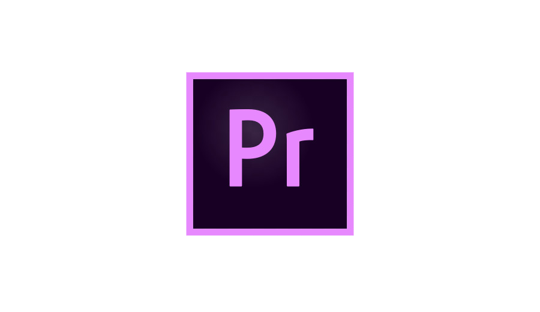
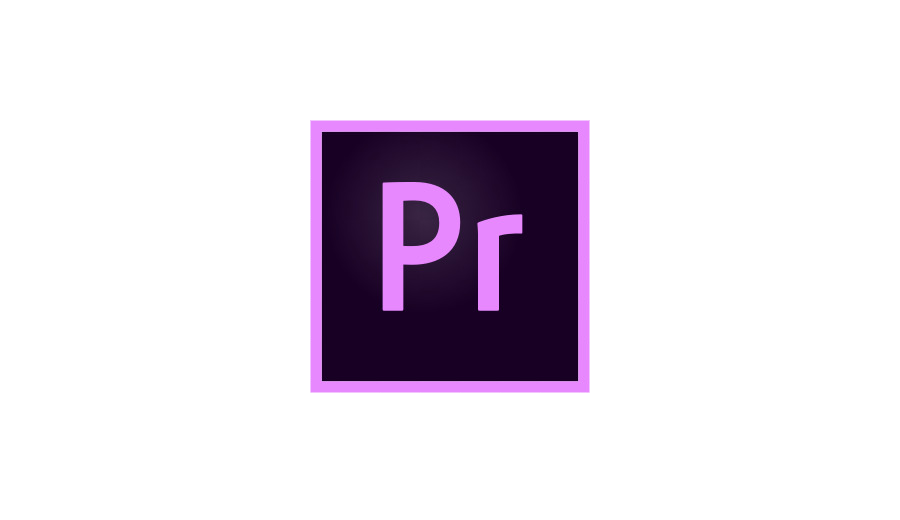

I am intermediately proficient with java. I have used a few modules for personal and academic
many projects
including JavaFX integrated with SceneBuilder and mysql databases.
You can find a few of my projects here:
Project1 |
Project 2 |
Project 3
 
